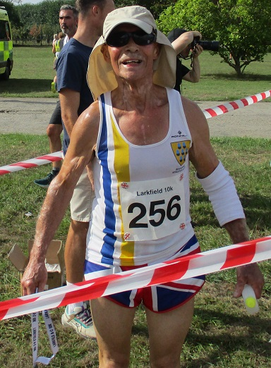
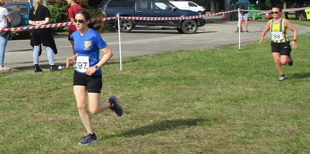

Fourteen Sevenoaks AC runners took part in the Larkfield 10k on 11th September, led home by Jamie Philip, who was ninth and third M40. With Kent county short course titles also up for grabs, Bridgit Weekes was also a medalist with second W55.
Conditions were warm and sunny after early mist, with a few changes to the previous course which were generally well-received.
The full SAC results were as follows:
| Pos | Race No | Name | Gun Time | Chip Time | Category | Cat Pos | Gender | Gen Pos | Club | Pace | |
|---|---|---|---|---|---|---|---|---|---|---|---|
| 9 | 211 | Jamie Philip | 00:35:37 | 00:35:34 | MV40 | 3 | Male | 9 | Sevenoaks AC | 5:44 min/m | |
| 12 | 79 | Paul Fanti | 00:36:27 | 00:36:25 | MV40 | 4 | Male | 12 | Sevenoaks AC | 5:52 min/m | |
| 28 | 179 | Andrew Mead | 00:39:03 | 00:38:58 | MV50 | 8 | Male | 23 | Sevenoaks AC | 6:17 min/m | |
| 34 | 244 | Darius Sarshar | 00:39:21 | 00:39:15 | MV50 | 9 | Male | 28 | Sevenoaks AC | 6:20 min/m | |
| 75 | 76 | Paul Elton | 00:43:57 | 00:43:39 | MV40 | 21 | Male | 58 | Sevenoaks AC | 7:05 min/m | |
| 79 | 282 | Gary Walsh | 00:44:05 | 00:43:53 | MV50 | 20 | Male | 61 | Sevenoaks AC | 7:06 min/m | |
| 128 | 68 | Chris Desmond | 00:47:34 | 00:47:25 | MV50 | 35 | Male | 99 | Sevenoaks AC | 7:40 min/m | |
| 130 | 95 | James Graham | 00:47:52 | 00:47:26 | MV60 | 9 | Male | 101 | Sevenoaks AC | 7:43 min/m | |
| 134 | 288 | Bridgit Weekes | 00:48:17 | 00:48:05 | FV55 | 2 | Female | 31 | Sevenoaks AC | 7:47 min/m | |
| 145 | 106 | Simon Hallpike | 00:49:15 | 00:48:51 | MV60 | 12 | Male | 111 | Sevenoaks AC | 7:56 min/m | |
| 163 | 247 | Sarah Shewell | 00:51:13 | 00:50:57 | FV55 | 4 | Female | 41 | Sevenoaks AC | 8:15 min/m | |
| 178 | 297 | Lucy Wilkes | 00:52:56 | 00:52:32 | FV35 | 9 | Female | 46 | Sevenoaks AC | 8:32 min/m | |
| 255 | 256 | Lionel Stielow | 01:04:44 | 01:04:16 | M70+ | 8 | Male | 174 | Sevenoaks AC | 10:26 min/m | |
| 286 | 292 | Adam Westbrooke | 01:14:54 | 01:14:09 | MV50 | 73 | Male | 189 | Sevenoaks AC | 12:04 min/m | |
The full results are here.
